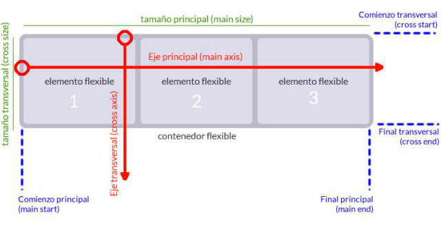
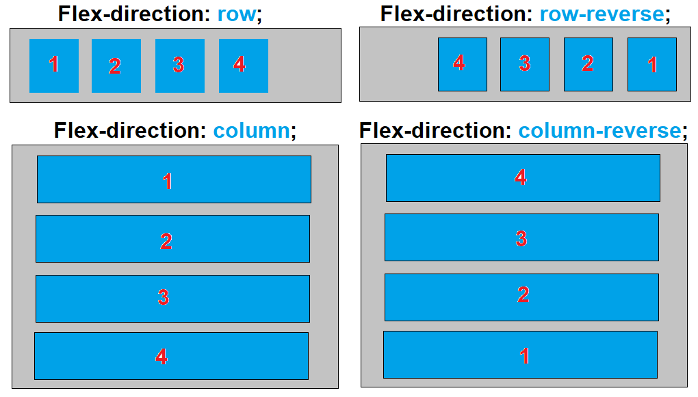
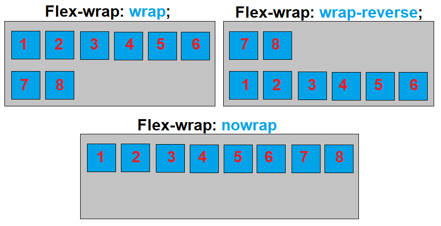
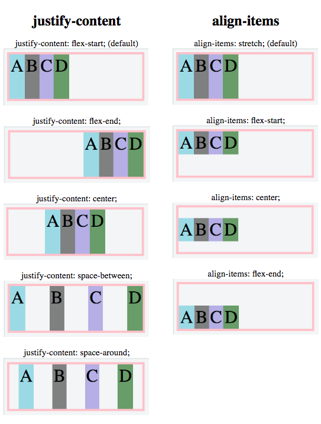

El Módulo de Caja Flexible, comúnmente llamado flexbox, fue diseñado como un modelo unidimensional de layout, y como un método que pueda ayudar a distribuir el espacio entre los ítems de una interfaz y mejorar las capacidades de alineación.
Vamos aprender a utilizarlo, pera esto se debe tener claro dos conceptos importantes, el elemento contenedor o padre y el elemento item o hijo. También debe conocer los ejes, eje principal y eje transversal.
Eje Principal
El eje principal está definido por flex-direction, Si elegimos row o row-reverse, el eje principal correrá a lo largo de la fila según la dirección de la línea, este posee cuatro posibles valores que son:
- row
- row-reverse
- column
- column-reverse
Eje cruzado
El eje cruzado va perpendicular al eje principal, y por lo tanto si flex-direction (del eje principal) es row o row-reverse el eje cruzado irá por las columnas

Estas son algunas propiedades muy útiles cuando utilizamos los Flexbox, y que son aplicables al elemento padre para alinear a los elemento hijos o items: FLEX-DIRECTION, FLEX-DIRECTION, FLEX-FLOW, JUSTIFY CONTENT, ALIGN-ITEMS. Veremos que funcion cumple cada una.
PROPRIEDADES QUE CONTROLAN LA DIRECCIÓN
FLEX-DIRECTION
flex-direction: row; alinea horizontalmente los elementos de izquierda a la dereha.
flex-direction: row-reverse; alinea horizontalmente los elementos de la derecha a la izquierda
flex-direction: column; alinea verticalmente los elementos de arriba hacia abajo
flex-direction: column-reverse; alinea verticalmente los elementos de abajo hacia arriba

FLEX-WRAP
flex-wrap: wrap La propiedad de envoltura flexible especifica si las posiciones flexibles deben deslizar o no.
flex-wrap: wrap-reverse; deslizan en orden inverso
FLEX-FLOW:
flex-flow: row wrap; La propiedad flex-flow es una propiedad abreviada para establecer flex-direction y flex-wrap.

PROPRIEDADES QUE CONTROLAN LA ALINEACIÓN
JUSTIFY CONTENT
La propriedad justify-content es usada para alinear los elementos flexibles en el eje principal.
justify-content: center; centra los elementos en el contenedor
justify-content: flex-start; Alinea los elementos al principio del contenedor. Es la propriedad tomada por defecto.
justify-content: flex-end; Alinea los elementos al final del contenedor. Es de Default.
justify-content: space-around; muestra los elementos flexibles con espacio antes, entre y después de las líneas
justify-content: space-between; muestra las posiciones flexibles con espacio entre las líneas.
ALINEACION VERTICAL
La alineación vertical se realiza a través del llamado “eje transversal” (cross axis), y para ello contamos con tres propiedades diferentes, “align-items”, “align-self” y “align-content”. veamos los que no dice el W3C sobre estas propiedades:
align-items: establece la alineación predeterminada para todos los elementos del contenedor, incluidos los elementos independientes.
align-self: permite alinear elementos independientes del contenedor.
align-content: alinea las líneas/filas de elementos de un contenedor.
LA PROPRIEDAD ALIGN-ITEMS
Esta propiedad es similar a justify-content, pero la diferencia es el eje a lo largo del cual funciona. Para entender mejor esto, tenéis que intentar quitar la propiedad que define la altura de los elementos hijos, y aumentar la del elemento padre:
align-items: center; centra los elementos a lo largo del eje.
align-items: flex-start alinea en vertical los elementos flexibles en la parte superior del contenedor, osea posiciona los elementos desde el inicio del contenedor, es decir, a lo largo del eje transversal. También afecta el valor de “flex-direction” al sentido de la alineación vertical.
align-items: flex-end alinea los divs flexibles en la parte inferior del contenedor a lo largo del eje transversal
align-items: stretch: estira los elementos flexibles para llenar el contenedor (esto es valor predeterminado)
